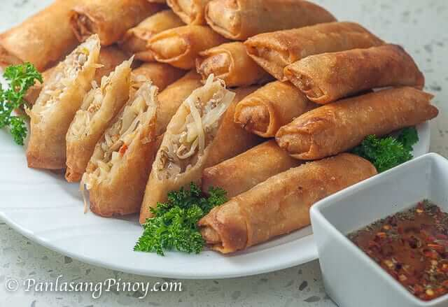

Vegetable Lumpia

Description
Lumpiang Gulay or Vegetable Egg Roll is a simple fried appetizer dish made from vegetables and fried tofu. These are wrapped in egg roll wrappers and then fried until crispy. This dish is known as vegetable spring rolls in Asia.
Ingredients
- 1 lb mung bean sprouts
- 6 ounces fried extra firm tofu cut into cubes
- 2 cups shredded cabbage
- 1 medium yellow onion sliced
- 1 small tomato cubed
- 1 teaspoon minced garlic
- 2 teaspoons coarse sea salt
- ¼ teaspoon ground black pepper
- egg roll or spring roll wrapper
- 1 ½ cups cooking oil
Instructions
- Heat 3 tablespoons of cooking oil. Once the oil gets hot, saute garlic and onion.
- When the onion gets soft, add tomato and tofu. Stir fry for 2 minutes.
- Put some salt and ground black pepper. Stir
- Add the cabbage and then cook for 3 minutes.
- Stir-in the bean sprouts and cook for 5 minutes.
- Transfer the cooked vegetable in a plate. Drain the excess liquid.
- Once the vegetable cools-off, start to wrap it using the egg roll wrappers. Lay the wrapper flat on a big plate. Place around 2 to 2 1/2 tablespoon of vegetable on one end of the wrapper. Fold the opposite edges of the wrapper and then roll until the vegetables are secured. Seal the end of the wrapper by dipping your finger in water and run it over the end of the wrapper; gently press the wet loose end towards the egg roll.
- Heat the remaining cooking oil in a cooking pot. Once the oil gets hot, fry one side of the egg rolls in medium heat until the color of the wrapper turns golden brown. Flip the egg roll to cook the opposite side.
- Remove the egg rolls from the cooking pot and arrange in a plate lined with paper towel.
- Serve warm with spiced vinegar. Enjoy!